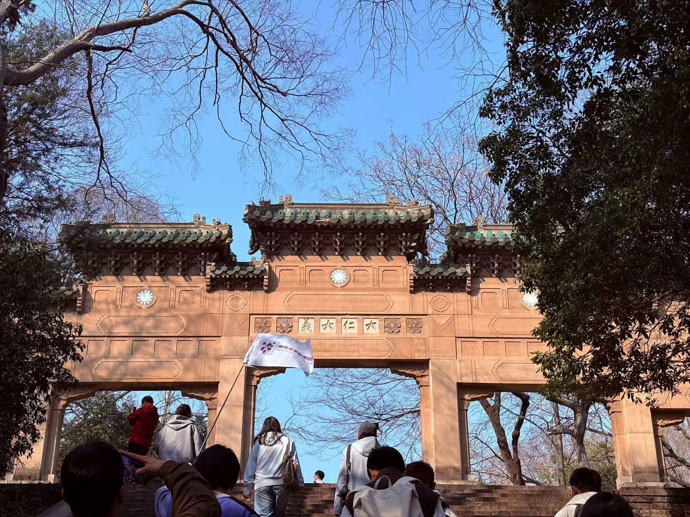

行走与考察
组织城市漫步和野外考察，在街巷、遗址与自然景观中发现地理问题。
ABOUT NJUGA
南京大学地理协会成立于 2025 年，以“地理无界 · 世界相连”为宗旨。
我们用地理的视角观察城市与自然：从一条街道理解城市变迁，从一次实地考察认识土地，也把观察转化成文章和地图。
组织城市漫步和野外考察，在街巷、遗址与自然景观中发现地理问题。
开展阅读分享、学术讲座和地理科普，交流不同专业的观察。
制作校园与城市主题地图，撰写地方观察和原创推文，记录探索成果。
GALLERY



活动策划、路线设计与实地踩点，让每一次出发都有准备。
推文、海报、摄影与新媒体，把我们看见的世界分享出去。
地理科普、学术讲座与 GIS 交流，让好奇心获得新的工具。
邀请嘉宾、联系伙伴，连接更多热爱地理的人。
物资、财务与后勤支持，为每一次活动提供保障。